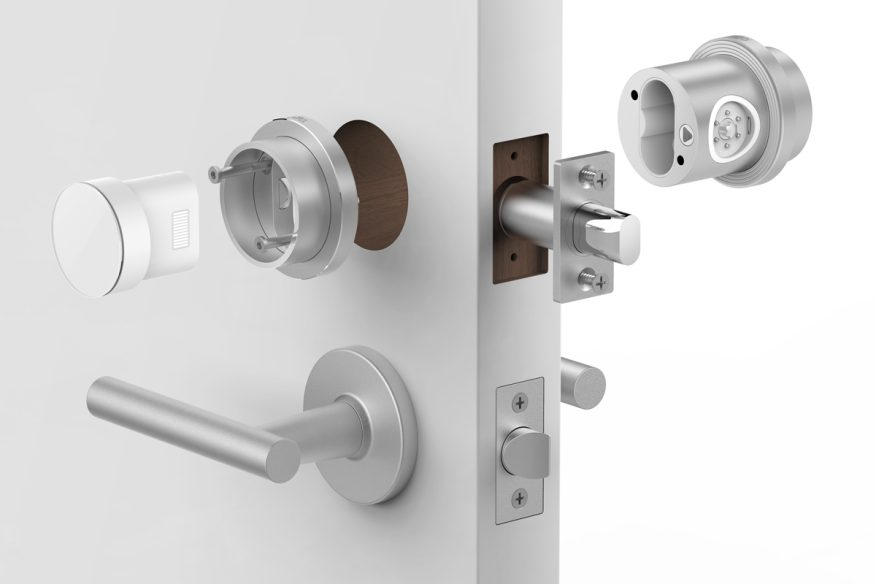
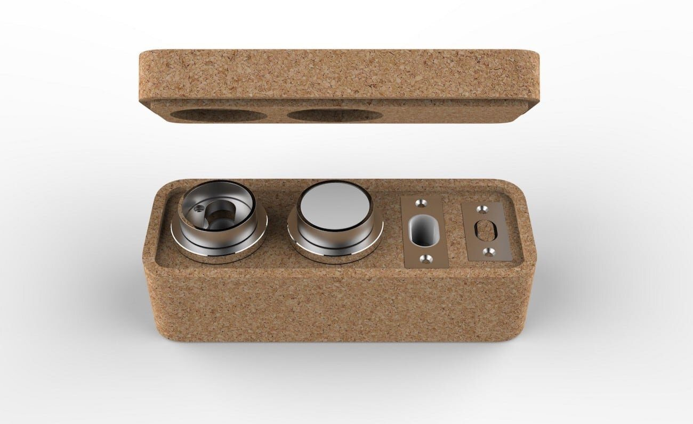
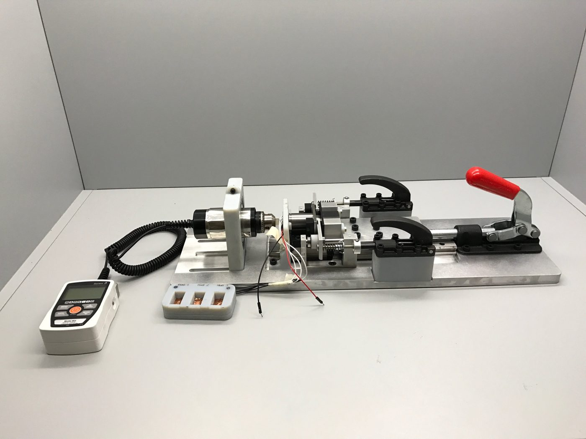
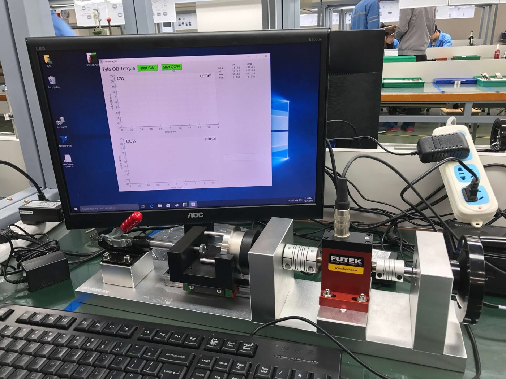
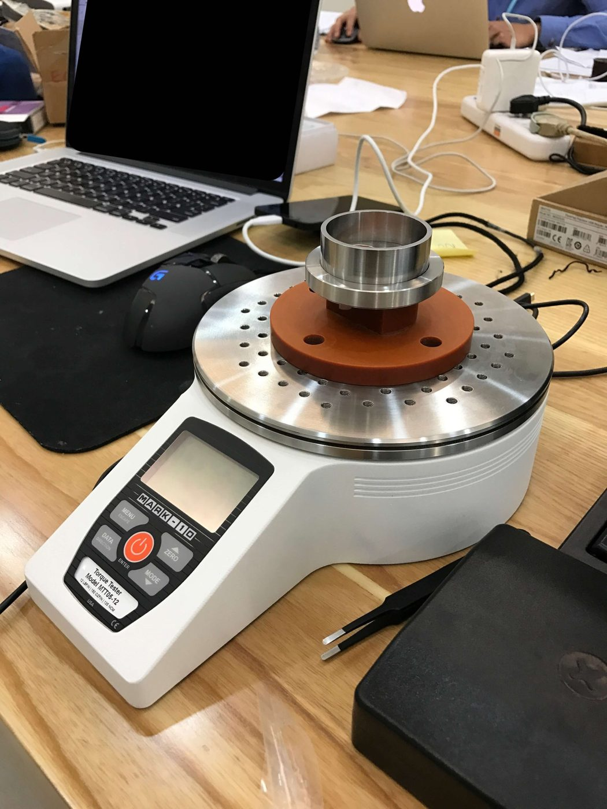
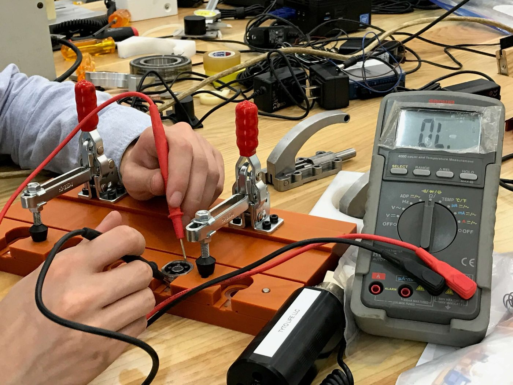
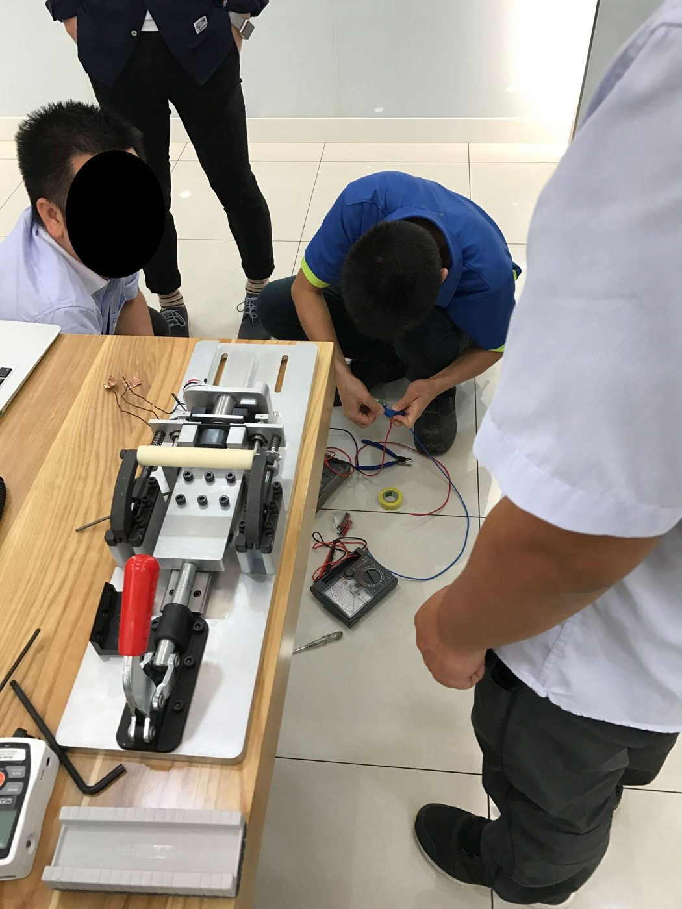
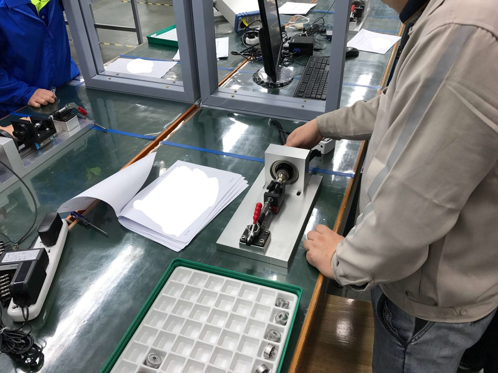

Otto LLC, 2016 · Product development co-op: production parts, test fixtures, vendor bring-up
A smart deadbolt from a Bay Area startup, which I helped take from CAD to a production line during a nine-month co-op. I designed production parts, built the fixtures that tested them, and then flew to China to get two vendors running those tests on their own lines. My work on it earned a patent.

| My part | Production components and packaging, assembly and test fixtures, vendor training and on-site FAI in China |
|---|---|
| Tools | Siemens NX, GD&T drawings, first article inspection, optical measurement, in-house and outside 3D printing, machining |
| Test hardware | Mark-10 gauges and desktop torque tester, FUTEK torque sensor, toggle clamps, linear rail, voltmeter |
| Patent | US 10,683,677, intelligent door lock system for use with a door assembly |
TL;DR. Otto made a smart lock. I drew some of the parts that went into it, then built the stations that check each lock before it ships. Every station is simple enough for anyone to run and easy to hand over to a machine later. Then I went to the factories in China and taught them to build and run the same stations themselves.
I'd never touched Siemens NX before day one, and then I was in it every day for nine months. I modeled several production components and their assemblies and drew them up with GD&T. When the first articles came back I measured them myself against those drawings, partly on an optical measuring machine I set up to run automatically. Prototypes came off Otto's own printers when we needed them fast, and from outside print services when we needed them better.

This was my favorite one. The bolt ships as its own assembly and the customer puts it in the door, so it has to pass on its own before it leaves. My fixture checks seven things about the bolt in four moves by the operator. A Mark-10 reads every force, and a voltmeter confirms the whole circuit.
Every operator step is either flipping a toggle clamp or taking a reading. That was on purpose. Otto planned to automate this once volume went up, so swapping the clamps for electric actuators and letting a computer take the readings is all it takes.

The bezels on the lock have to turn with the same feel every time, so I adapted the bolt fixture to measure their torque. A toggle clamp pushes a FUTEK torque sensor into the bezel. The trick is a spring on a linear rail behind it, which keeps that contact force identical from part to part no matter who's pulling the clamp.
For the operator it's dead simple. Close the clamp, pick inner or outer bezel in the program, hit record, and turn the crank. The program logs two full turns, just to be sure. Put a motor on the crank and an actuator on the clamp, and the whole thing runs itself off one button.

The eject bezel only turns 70° clockwise and then springs back, so there's one number to check. It has to be stiff enough that nobody trips it by accident, and light enough to turn without a tool. I made a plate that mounts into a Mark-10 desktop torque tester. You set the bezel on it, turn it the full 70°, and read off the peak.

The bolt talks to the lock through six pogo pins, one for power and five for data. I wanted bad pins caught before the bolt was ever assembled. This board clamps five bolt backs at once, the operator puts a voltmeter on the power rail, and then touches each data pin in turn. A reading means the pin is good. It's the simplest fixture of the bunch.

Once the fixtures worked in house, I traveled to two first-tier vendors in China. These lines had moving parts, wiring and Otto's own test software all in one station. One vendor was great at making parts but had never done assembly, and our schedule had just been pulled in. So I took on teaching their technicians to build mirror copies of my fixtures and bring the lines up.

A test station is only worth something if the vendor runs it the way we meant. Step by step:
